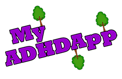

Welcome to My ADHDApp.
Here you can find all the latest information about ADHD in the UK, Useful links, contacts and resources on ADHD available
App Name:
My ADHDApp
Version:
1.2.9
Developer:
Anthony Reynolds
Company:
My ADDventure
Contact:
app@myadhdapp.co.uk
This app has been developed to support ADHD and give easier access to information when on the move.
© 2013 My ADDventure
Attention deficit hyperactivity disorder (ADHD) is a group of behavioural symptoms that include inattentiveness, hyperactivity and impulsiveness. Attention deficit disorder (ADD) is a sub-type of ADHD.
Common symptoms of ADHD include:
ADHD can occur in people of any intellectual ability. However, many people with ADHD also have learning difficulties. They may also have additional problems such as sleep disorders.
Symptoms of ADHD tend to be first noticed at an early age, and may become more noticeable when a child’s circumstances change, such as starting school.
Young children are naturally active and easily distracted. However, if these features are excessive for a child’s age and general developmental level and affecting their daily life, they may indicate ADHD.
ADHD is normally diagnosed between the ages of three to seven, although in some cases it may not be until much later. It is more commonly diagnosed in boys.
There are several criteria that must be met for a child to be diagnosed with ADHD. Adults are harder to diagnose because there is no definitive set of age-appropriate symptoms.
Although the exact cause of ADHD is not known, research shows that it tends to run in families. Some research also shows that there may be differences in the way the brain works in people with ADHD.
Potential risk factors include:
ADHD is the most common behavioural disorder in the UK. It is estimated the condition affects 2-5% of school-aged children and young people.
ADHD can be a lifelong condition, and many children continue to have symptoms as a teenager and adult.
It is estimated that more than 2 out of 3 children diagnosed with ADHD will still have symptoms as teenagers. It is then estimated that 2 out of 3 of these teenagers will show symptoms as adults.
It is uncertain whether ADHD can occur in adults without first appearing in childhood.
There is no cure for ADHD, but it can be managed with appropriate educational support, advice and support for parents and the individual, and medication if necessary.
Living with a child with ADHD can be challenging but it is important to remember that they cannot help their behaviour.
Some issues that may arise in day to day life include:
Information taken from nhs.uk.
The symptoms of attention deficit hyperactivity disorder (ADHD) can be categorised into two sets of behavioural problems.
Symptoms include:
It is not fully understood whether these problems are an extreme form of normal behaviour, or part of a separate range of behaviour.
A person with ADHD usually has symptoms characteristic of one of the three subtypes of the condition. The subtypes are:
If your child has symptoms of all three behavioural problems – inattentiveness, hyperactivity and impulsiveness – they may have ADHD combined, which is the most common subtype of ADHD.
Alternatively, if your child has symptoms of inattentiveness but not hyperactivity or impulsiveness, they may have ADHD mainly inattentive. This form of ADHD is also known as attention deficit disorder (ADD).
Childhood ADHD is more commonly diagnosed in boys than girls, but this may be because disruptive behaviour, which the diagnosis may be partly based on, tends to be more common in boys than girls.
Girls with ADHD often have the mainly inattentive form of the condition, which may make them quiet and dreamy and can sometimes go unnoticed. It is therefore possible that ADHD could be underdiagnosed in girls, and could be more common than previously thought.
The symptoms of ADHD in children and teenagers are well defined. The main symptoms of each behavioural problem are detailed below.
The main symptoms of inattentiveness are:
The main symptoms of hyperactivity are:
The main symptoms of impulsiveness are:
If your child has ADHD, their symptoms usually become noticeable before the age of seven, with a diagnosis usually made between the ages of three and seven.
ADHD can cause problems in a child’s life, and can often lead to underachievement at school, poor social interaction with other children and adults and problems with discipline.
Although not always the case, your child may also have other problems or conditions alongside ADHD. These are explained below.
Some children with ADHD may have an anxiety disorder that causes them to worry and be nervous most of the time. Your child may also have physical symptoms, such as a rapid heartbeat, sweating and dizziness.
Oppositional defiant disorder (ODD) is common among children with ADHD. It is defined by negative and disruptive behaviour, particularly towards authority figures such as parents and teachers.
Children who have conduct disorder have a tendency towards highly antisocial behaviour, such as:
If your child is behaving in this way, book an appointment with your doctor as soon as possible.
It is possible for children with ADHD to become depressed as a result of their condition.
Children with ADHD can be hyperactive and find it difficult to sleep at night. They may experience irregular sleeping patterns.
Epilepsy is a condition of the brain that causes seizures (fits).
Tourette’s syndrome is a condition of the nervous system (the nerves, brain and spinal cord) that causes involuntary movements and sounds.
It is thought that around a third of children with ADHD also have learning difficulties, such as dyslexia (difficulty reading and spelling words).
In adults, the symptoms of ADHD are more difficult to define. This is largely due to a lack of research into adults with ADHD.
It is still uncertain whether ADHD can occur in adults without it first appearing during childhood, although it is known that symptoms of ADHD often persist from childhood into the teenage years and adulthood. Any additional problems or conditions experienced by children with ADHD, such as depression or dyslexia, are also likely to carry into adulthood.
By the age of 25, an estimated 15% of people diagnosed with childhood ADHD still have a full range of symptoms, and 65% still have some symptoms that affect their daily lives.
There is no definitive list of adult ADHD symptoms, and experts agree that simply applying the childhood symptoms to adults would not work. This is because the way in which inattentiveness, hyperactivity and impulsiveness affect adults is very different from the way they affect children.
For example, hyperactivity tends to decrease in adults, while inattentiveness tends to get worse as the pressure of adult life increases. Also, adult symptoms of ADHD tend to be far more subtle than childhood symptoms.
Below is a list of symptoms associated with adult ADHD:
As with ADHD in children and teenagers, ADHD in adults can appear alongside many related problems or conditions. One of the most common conditions is depression. Other conditions that adults may have alongside ADHD include:
Any problems you may have had as a child are likely to persist into adulthood, which can make life extremely difficult. For example, you may have problems:
Information taken from nhs.uk.
The symptoms of attention deficit hyperactivity disorder (ADHD) can be categorised into two sets of behavioural problems.
Symptoms include:
It is not fully understood whether these problems are an extreme form of normal behaviour, or part of a separate range of behaviour.
A person with ADHD usually has symptoms characteristic of one of the three subtypes of the condition. The subtypes are:
If your child has symptoms of all three behavioural problems – inattentiveness, hyperactivity and impulsiveness – they may have ADHD combined, which is the most common subtype of ADHD.
Alternatively, if your child has symptoms of inattentiveness but not hyperactivity or impulsiveness, they may have ADHD mainly inattentive. This form of ADHD is also known as attention deficit disorder (ADD).
Childhood ADHD is more commonly diagnosed in boys than girls, but this may be because disruptive behaviour, which the diagnosis may be partly based on, tends to be more common in boys than girls.
Girls with ADHD often have the mainly inattentive form of the condition, which may make them quiet and dreamy and can sometimes go unnoticed. It is therefore possible that ADHD could be underdiagnosed in girls, and could be more common than previously thought.
The symptoms of ADHD in children and teenagers are well defined. The main symptoms of each behavioural problem are detailed below.
The main symptoms of inattentiveness are:
The main symptoms of hyperactivity are:
The main symptoms of impulsiveness are:
If your child has ADHD, their symptoms usually become noticeable before the age of seven, with a diagnosis usually made between the ages of three and seven.
ADHD can cause problems in a child’s life, and can often lead to underachievement at school, poor social interaction with other children and adults and problems with discipline.
Although not always the case, your child may also have other problems or conditions alongside ADHD. These are explained below.
Some children with ADHD may have an anxiety disorder that causes them to worry and be nervous most of the time. Your child may also have physical symptoms, such as a rapid heartbeat, sweating and dizziness.
Oppositional defiant disorder (ODD) is common among children with ADHD. It is defined by negative and disruptive behaviour, particularly towards authority figures such as parents and teachers.
Children who have conduct disorder have a tendency towards highly antisocial behaviour, such as:
If your child is behaving in this way, book an appointment with your doctor as soon as possible.
It is possible for children with ADHD to become depressed as a result of their condition.
Children with ADHD can be hyperactive and find it difficult to sleep at night. They may experience irregular sleeping patterns.
Epilepsy is a condition of the brain that causes seizures (fits).
Tourette’s syndrome is a condition of the nervous system (the nerves, brain and spinal cord) that causes involuntary movements and sounds.
It is thought that around a third of children with ADHD also have learning difficulties, such as dyslexia (difficulty reading and spelling words).
In adults, the symptoms of ADHD are more difficult to define. This is largely due to a lack of research into adults with ADHD.
It is still uncertain whether ADHD can occur in adults without it first appearing during childhood, although it is known that symptoms of ADHD often persist from childhood into the teenage years and adulthood. Any additional problems or conditions experienced by children with ADHD, such as depression or dyslexia, are also likely to carry into adulthood.
By the age of 25, an estimated 15% of people diagnosed with childhood ADHD still have a full range of symptoms, and 65% still have some symptoms that affect their daily lives.
There is no definitive list of adult ADHD symptoms, and experts agree that simply applying the childhood symptoms to adults would not work. This is because the way in which inattentiveness, hyperactivity and impulsiveness affect adults is very different from the way they affect children.
For example, hyperactivity tends to decrease in adults, while inattentiveness tends to get worse as the pressure of adult life increases. Also, adult symptoms of ADHD tend to be far more subtle than childhood symptoms.
Below is a list of symptoms associated with adult ADHD:
As with ADHD in children and teenagers, ADHD in adults can appear alongside many related problems or conditions. One of the most common conditions is depression. Other conditions that adults may have alongside ADHD include:
Any problems you may have had as a child are likely to persist into adulthood, which can make life extremely difficult. For example, you may have problems:
Information taken from nhs.uk.
The characteristics of ADHD come in 3 primary categories:
These characteristics are present in both children and adults affected by ADHD.
Under these categories comes a multitude of sub symptoms. Here is just a handful of symptoms recognised in those with ADHD.
(REF: Children with Attention Difficulties – A Guide for Teachers. Jack Crompton)
There is no simple test to determine whether you or your child has attention deficit hyperactivity disorder (ADHD). If you think that you or your child may have ADHD, see your GP.
Your GP will ask:
Your GP will want to know if these symptoms are causing functional impairment. This means whether they are affecting day-to-day life. For example, a child may have functional impairment if:
If you are a parent whose child may have ADHD, you may be offered parent training or an education programme to teach you to use behavioural techniques to help your child.
Alternatively, if your child’s symptoms are causing severe functional impairment, your GP will refer your child to another healthcare professional who will be able to diagnose ADHD.
For adults with ADHD symptoms, your GP will assess your symptoms and may refer you to a specialist if:
You may also be referred to a specialist if you had ADHD as a child or young person and your symptoms are now causing moderate or severe functional impairment.
If your GP suspects that you or your child has ADHD, they may refer you to a specialist such as:
Who you are referred to will depend on your age and what is available in your local area.
Your specialist can make an accurate diagnosis after a detailed assessment that may include:
Diagnosing ADHD in children depends on a set of strict criteria. To be diagnosed with ADHD, your child must have six or more symptoms of inattentiveness, or six or more symptoms of hyperactivity and impulsiveness.
The type of ADHD your child will be diagnosed with will depend on the number of symptoms they have from each group. For example, if they have eight symptoms of hyperactivity and impulsiveness and only three symptoms of inattentiveness, they will be diagnosed with ADHD mainly hyperactive-impulsive.
To be diagnosed with ADHD, your child must also have:
Diagnosing ADHD in adults is more difficult because there is no definitive list of symptoms that can be applied to an adult who may have the condition.
If your GP refers you to a specialist, they will ask about your present symptoms. However, under current diagnostic guidelines, a diagnosis of adult ADHD cannot be confirmed unless your symptoms have been present from childhood.
To help your specialist decide on your diagnosis, they may ask about your childhood and whether your symptoms were present then. If you find it difficult to remember, or you were not diagnosed with childhood ADHD, your specialist may wish to see your old school records or talk to your parents, teachers or anyone else who knew you well when you were a child.
For an adult to be diagnosed with ADHD, their symptoms should cause a moderate degree of impairment in different areas of their life. Examples of impairment could be:
If your problems are recent and did not occur regularly in the past, you are not considered as having adult ADHD.
Information taken from nhs.uk.
The exact cause of attention deficit hyperactivity disorder (ADHD) is not fully understood. It is thought ADHD is caused by a mix of genetic (inherited) and environmental factors.
ADHD tends to run in families and, in most cases, it is thought inheriting the condition is the most likely cause. Research shows that both parents and siblings of a child with ADHD are four to five times more likely to have ADHD themselves.
Research shows that the way the brain works in people with ADHD differs from that of people who do not have the condition. It is thought chemicals in the brain that carry messages, known as neurotransmitters, do not work properly in people with ADHD. Also, people with the condition seem to display less activity in the parts of their brains that control activity and attention.
Some research shows that the frontal lobes, the part of the brain that controls decision-making, do not work as they should in people with ADHD. Other research indicates they may have imbalances in the levels of certain chemicals, such as noradrenaline and dopamine.
Women who drink alcohol when pregnant are more likely to have a child with ADHD. It is also thought that smoking and drug abuse can also increase the risks of ADHD in an unborn child.
Boys are more commonly diagnosed with childhood ADHD than girls, and more men are diagnosed with the condition than women. Research suggests this could be because diagnosis tends to pinpoint loud, disruptive behaviour, which is more noticeable and more common in males than in females.
It could also be that ADHD is missed in girls because they tend to have the form of the condition defined by inattentiveness (ADHD mainly inattentive, or attention deficit disorder).
Other possible causes of ADHD include:
Information taken from nhs.uk.
There is no cure for attention deficit hyperactivity disorder (ADHD), but treatment can alleviate your symptoms and make the condition much less of a problem in day-to-day life. ADHD can be treated using medication or therapy, but it is widely agreed a combination of both is the best way to treat it.
Treatment will usually be arranged by a specialist, such as a paediatrician or psychiatrist (an expert in mental and emotional health), although your condition may be monitored by your GP.
There are three types of medication for ADHD:
Medications for ADHD are not a permanent cure. Methylphenidate and dexamfetamine based medications give a period of treatment during each day (between 4-12 hours depending on the preparation). Atomoxetine usually gives a longer period of treatment.
Medications help someone who has ADHD to:
In the UK, all three of these medications are licensed for use in children and teenagers. Atomoxetine is licensed for use in adults who were diagnosed with ADHD as children. However, there are no medications currently licensed for treating newly diagnosed adults, or for use specifically in adults.
If you have been diagnosed with adult ADHD, your GP and specialist can discuss which medications and therapies may be suitable for you.
Methylphenidate and dexamfetamine are controlled drugs, which means their availability and use are more closely controlled than other prescription medicines. With all ADHD medications, if you or your child is prescribed one of these treatments, you will probably be given small dosages at first, which may then be gradually increased.
Medication is most effective if used every day. Treatment breaks are not normally recommended apart from in specific situations.
You or your child will need to see your GP for regular check-ups to ensure the treatment is working effectively. Your specialist will discuss how long you should take your treatment. Generally, children with ADHD will need to continue treatment at least until after GCSE examinations.
Methylphenidate comes in a number of different brands and is the most commonly used medication for ADHD. Methylphenidate is known as a psychostimulant or central nervous system (CNS) stimulant. It is not completely clear how it works, but it is thought it stimulates a part of the brain that changes mental and behavioural reactions.
Methylphenidate can be used by teenagers and children with ADHD over the age of six years. Although methylphenidate is not licensed for use in adults, it may be taken under close supervision from your GP and specialist.
Methylphenidate cannot be taken:
Methylphenidate should be used with caution:
Methylphenidate can be taken as either immediate-release tablets (small doses taken two to three times a day), or as modified-release tablets (taken once a day in the morning, and they release the dose throughout the day) as this will cover the whole school day or last into the evening. Modified-release capsules can be opened and sprinkled on food so are suitable for young children who may not be able to swallow tablets.
Methylphenidate can cause side effects, which may include:
There are ways to ease these side effects. For example, loss of appetite may be avoided by taking the medication with a meal or snack. Teenagers and adults should avoid drinking alcohol during treatment because this can make side effects worse.
Dexamfetamine works in the same way as methylphenidate. It is also classed as a psychostimulant or CNS stimulant, and may be particularly effective in controlling hyperactivity.
Dexamfetamine can be used by teenagers and children with ADHD who are over three. Although it is not licensed for use in adults, it may be taken under close supervision from your GP and specialist.
Dexamfetamine cannot be taken:
Dexamfetamine should be used with caution if you or your child has epilepsy.
Dexamfetamine is usually taken as a daily tablet once or twice a day and may have side effects similar to those of methylphenidate.
Atomoxetine works differently from methylphenidate and dexamfetamine.
Atomoxetine is known as a selective noradrenaline uptake inhibitor (it increases the amount of a chemical in the brain called noradrenaline). This chemical passes messages between brain cells, so by increasing the amount the atomoxetine aids concentration and helps control impulses.
Atomoxetine can be used by teenagers and children over six. It is also licensed for use in adults who are continuing treatment after taking the medication as a teenager. It is not licensed for use in adults newly diagnosed with ADHD, but your GP and specialist may prescribe it under their supervision.
Atomoxetine cannot be taken:
Like other medications, the use of atomoxetine must be closely monitored by your GP and specialist.
Some studies have shown a small number of children and young people who take atomoxetine are more likely to think about suicide. If either you or your child begin to feel depressed or suicidal while taking this medication, see your GP to ask about switching to a different medication.
Also, in rare cases, there is evidence that atomoxetine can cause liver damage. Arrange to see your GP regularly if you or your child is taking this medication.
Atomoxetine comes in capsule form you or your child takes once or twice a day. Capsules are long-acting, so your child will not need to take them at school. It may be prescribed as an alternative to methylphenidate or dexamfetamine if these are ineffective or cause adverse effects.
Atomoxetine can cause side effects, which may include:
If you or your child needs medication for ADHD, your GP and specialist will take several factors into account before recommending a treatment.
These will include:
As well as taking medication, different therapies can be useful in treating ADHD in children, teenagers and adults. Therapy is also effective in treating additional problems, such as conduct or anxiety disorders, that may appear with ADHD.
Therapies outlined below can be carried out with the help of a number of healthcare professionals, including:
Psychotherapy is a type of talking therapy, which means you or your child will be encouraged to discuss ADHD and how it affects you. It can help children, teenagers and adults make sense of being diagnosed with ADHD, and can help you to cope and live with the condition.
Behaviour therapy provides support for carers of children with ADHD, and may involve teachers as well as parents. Behaviour therapy usually involves behaviour management, which uses a system of rewards and penalties to encourage your child to try and control their ADHD.
If your child has ADHD, you can identify types of behaviour you want to encourage, such as sitting at the table to eat. Your child is then given some sort of small reward for good behaviour, and a small penalty for poor behaviour. For teachers, behaviour management involves learning how to plan and structure activities and to praise and encourage children for even very small amounts of progress.
If your child has ADHD, parent training and education programmes can help you learn specific ways of talking to your child and playing and working with them to improve their attention and behaviour. You may also be offered parent training before your child is officially diagnosed with ADHD.
These programmes are usually arranged in groups and can last several weeks. They aim to teach parents and carers about behaviour management (see above), while increasing your confidence in your ability to look after your child and improving the relationship between you and your child.
Social skills training involves your child taking part in role-play situations, and aims to teach them how to behave in social situations by learning how their behaviour affects others.
Cognitive behavioural therapy (CBT) is an alternative form of therapy based on the idea that your problems are often created by you. It is not the situation itself that is causing problems, but how you think about it and how you react to it. A CBT therapist would try and change how your child feels about a situation, which would in turn change their behaviour.
There are other ways of treating ADHD that some people with the condition find helpful, such as cutting out certain foods and taking supplements. However, there is no medical evidence these methods work, and they should not be attempted without medical advice.
People with ADHD should eat a healthy balanced diet. Do not cut out foods without medical advice.
Some people may notice a link between types of food and worsening ADHD symptoms. For example, sugar and caffeine are often blamed for aggravating hyperactivity, and some people feel they have intolerances to wheat or dairy products that may add to their symptoms.
If this is the case, keep a diary of what you eat and drink and what behaviour this causes. Discuss this with your GP, who may refer you to a dietitian (a healthcare professional who specialises in nutrition).
However, do not change your (or your child’s) diet without medical advice.
Some people consider certain supplements, such as omega 3 fatty acid, to be beneficial in people with ADHD. However, there is no medical evidence to support this. If you do wish to try using a supplement, talk to your GP first, as some can react unpredictably with other medication or make it less effective.
Also remember that supplements should not be taken long-term, as they can build up to dangerous levels in your body.
People with ADHD should take regular exercise.
Information taken from nhs.uk.
Living with a child who has attention deficit hyperactivity disorder (ADHD) can be draining. The impulsive, fearless and chaotic behaviours typical of ADHD can make normal everyday activities exhausting and stressful.
There are many areas that bring about their own issues when your child has ADHD, including:
It is difficult when things are going wrong, but it is important to remember a child with ADHD cannot help their behaviour. People with ADHD find it difficult to suppress impulses, which means they do not stop to consider a situation or the consequences before they act.
Plan the day so your child knows what to expect. Set routines can make a difference to how a child with ADHD copes with everyday life. If your child has to get ready for school, for example, break it down into structured steps so they know what the daily chores are.
Make sure everyone knows what behaviour is expected and reinforce positive behaviour with immediate praise or rewards. Be clear, using enforceable consequences if boundaries are overstepped (such as taking away a privilege) and follow these through consistently.
Give specific praise. Instead of saying a general, “Thanks for doing that,” you could say, “You washed the dishes really well. Thank you.” Your child will know you are pleased, and why.
If you are asking your child to do something, give brief instructions and be specific. Instead of asking, “Can you tidy your bedroom?” say, “Please put the Lego into the box and put the books back onto the shelf.” This allows your child to achieve and creates opportunities for praise when they get it right.
Set up your own incentive scheme using a points chart or star chart so good behaviour can earn a privilege. For example, behaving well on a shopping trip will earn your child time on the computer or a game of something. Involve your child in it and allow them to help decide what the privileges will be.
These charts need regular changes or they become boring. Targets should be:
Try to focus on just one or two behaviours at once.
Watch for warning signs. If your child looks like they are becoming frustrated, overstimulated and about to lose self-control, intervene. Distract your child if possible, by taking them away from the situation, which may calm your child down.
Keep social situations short and sweet. Invite friends to play, but keep playtimes short so your child does not lose self-control. Do not aim to do this when your child is feeling low (for example, when they are feeling tired or hungry after a day at school).
Make sure your child gets lots of physical activity during the day. Walking, skipping and playing sport can help your child wear themselves out and improve their quality of sleep. Make sure they are not doing anything too strenuous or exciting near to bedtime.
Keep an eye on what your child eats. If your child is hyperactive after eating certain foods, which may contain additives or caffeine, keep a diary of these and discuss with your GP.
Stick to a routine. Make sure your child goes to bed at the same time each night and gets up at the same time in the morning. Avoid overstimulating activities in the hours before bedtime, such as computer games or watching TV.
Sleep problems and ADHD can be a vicious circle. ADHD can lead to sleep problems, which in turn can make ADHD symptoms worse. Many children with ADHD will repeatedly get up after being put to bed and have interrupted sleep patterns. Trying a sleep-friendly routine can help your child and make bedtime less of a battleground.
Information taken from nhs.uk.
Submit your ADHD tip to us and help others with their ADHD day to day lives.
Being a parent of someone with ADHD can be like working 3 jobs. So here are some tips and tricks to help you keep balance.
A routine that sticks is a routine that fits.
With any person with ADHD keeping a valid and structured routine is key. Make sure that day to day tasks such as wake up times, bed times, breakfast ect happen every day at the same time.
These are key events and should where possible stay the same.
The ADHD mind seems to become more active at night than it should be. Try to remove stimulation from the bedroom environment
I.e TV, Computer, Toys.
This can help quite the mind and avoid stimulating the brain when it should be resting.
We all use rewards to enthuse young people to do the things they need to do or to teach them new skills.
Children with ADHD they can learn these skills as easily as someone without ADHD.
The problem then comes to applying these skills.
If you are going to use Star Charts, reward schemes ect you should keep them going indefinitely.
If you struggle with getting your child ready for school in the morning, why not turn it into a competition.
An example of this would be the first one dressed and ready gets to unlock the car or help scrape the ice off the windows.
Being a partner of someone with ADHD can put strain on a relationship. Here are some ideas to help you develop and move forward as a couple.
Your partner may struggle in their day to day routine and as such can require some external structure.
Together develop a routine that suits you both to overcome this obstacle.
That short term memory can be a pain. Try sending a reminder to your partner when there is something that needs to be done. A simple text message or phone call can go a long way.
One of the biggest symptoms of ADHD is that inability to correctly regulate emotion.
You may find that a situation has escalated further than it should have.
Take into account how your partner’s day has been before confronting them about something.
It is also good practice to use "I" statements instead of "You".
The word "You" can come across as an attack which can then escalate the situation to a mountain instead of the molehill it should have been.
An example would be "I feel we should spend more time together" instead of "You don't pay me enough attention".
As a teacher you have much to think about including the other 20-30 young people in your class. Here are some tips to help you get the most out of your ADHD students.
Imagine a super computer that can generate thousands of calculations a second.
Now imagine that super computer with no monitor.
You know that it’s able to do the task but you cannot see the results.
When you are dealing with a student who has ADHD remember that they may struggle to pass information from their head to the paper in front of them.
This is because the hand moves slower and by the time they have written the first line of text they are already thinking about the tenth.
Try to set tasks section by section. I.e
Task One What is your Name
Task Two Where do you live ect..
Squirells can be a big distraction!!
Keep things simple and interactive.
Over stimulating or under stimulating can lead to a wondering mind.
Short and sweet with instant reward can help keep a child in the zone.
Discipline and praise are needed for all young people, but try and avoid discipline in front of peers.
This can lead to a lower self-esteem and can also lead to distancing behaviour from the child.
Try finding 4 positives for every negative.
As someone with ADHD it can feel like everything is working against you. Here we have some ideas to make like that little bit easier and less stressful.
Post-it notes are amazing things and can really help you keep on top of your day to day tasks.
Write down your task and stick them somewhere you will be able to see them.
If you are prone to loosing your keys why not put a hook near your door where you can hang them as soon as you come in.
If you have appointments then set up reminders in your phone, use a calendar application or even tell someone else so they can remind you.
Do this as soon as you receive the appointment as you may have forgotten in 10 minutes.
Here you will find a list of local and national organisations that support ADHD in the United Kingdom. If you run an organisation and wish to be included in the list please vist the My ADHDApp Web Page for more information.
Just tap the logo of your chosen Organisation to view their information
Name: ADDISS
Location: National
Telephone: 020 8952 2800
Email: info@addiss.co.uk
Description: ADDISS, The National Attention Deficit Disorder Information and Support Service.
We provide people-friendly information and resources about Attention Deficit Hyperactivity Disorder to anyone who needs assistance - parents, sufferers, teachers or health professionals. Whatever you're looking for in ADHD, we'll do our best to help.
Name: My ADDventure
Location: Greater Manchester
Telephone: 0161 818 4523
Email: info@myaddventure.org.uk
Description: My ADDventure is the Greater Manchester Charity for the support and awarness of ADHD in all affected.